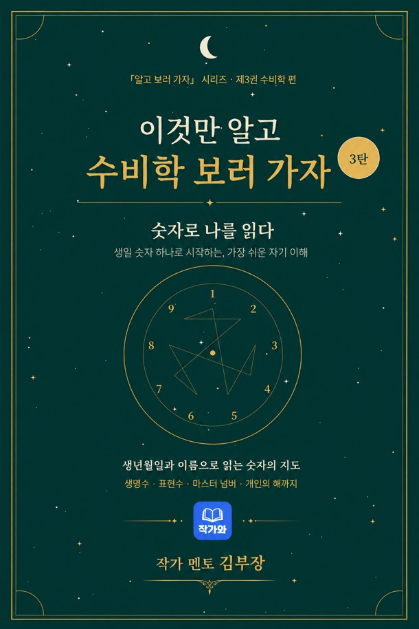

숫자로 나를 읽는 가장 쉬운 수비학 입문서. 복잡하게 느껴지는 서양 수비학을, 처음 접하는 독자도 직접 계산하고 해석할 수 있도록 차근차근 안내합니다. 생명수부터 아홉 개의 숫자, 마스터 넘버, 그리고 시간과 관계 해석까지 — 생년월일과 이름만 있으면 시작할 수 있습니다.

수비학을 처음 접하는 사람도, 상담 전에 읽으면 훨씬 이해가 쉬워집니다.
4부 30장, 숫자라는 언어의 문 앞에서 실전 활용까지 한 권에 담았습니다.
6장 · 수비학이란 무엇인지, 숫자를 한 자리로 줄여 읽는 기본기와 생명수 구하기까지 입문의 토대를 다집니다
10장 · 1부터 9까지, 숫자 하나하나의 성격과 강점·약점을 차례로 읽어 봅니다
6장 · 11·22·33 마스터 넘버와, 생명수 뒤에 숨어 있는 나머지 수들을 살핍니다
8장 · 숫자로 보는 시간의 흐름과 관계 해석, 그리고 일상에서 써먹는 방법까지
직접 계산하고 직접 해석하는, 가장 쉬운 수비학 입문 — 순서대로 따라가세요.
「알고 보러 가자」 시리즈 제3권 수비학 편 · 교보문고 · YES24 · 알라딘 · 리디북스 · 북큐브 eBook에서 만나보세요